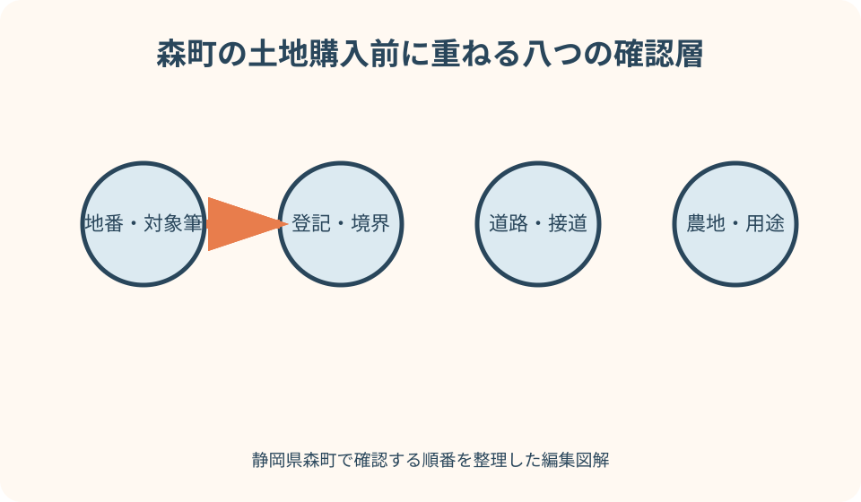
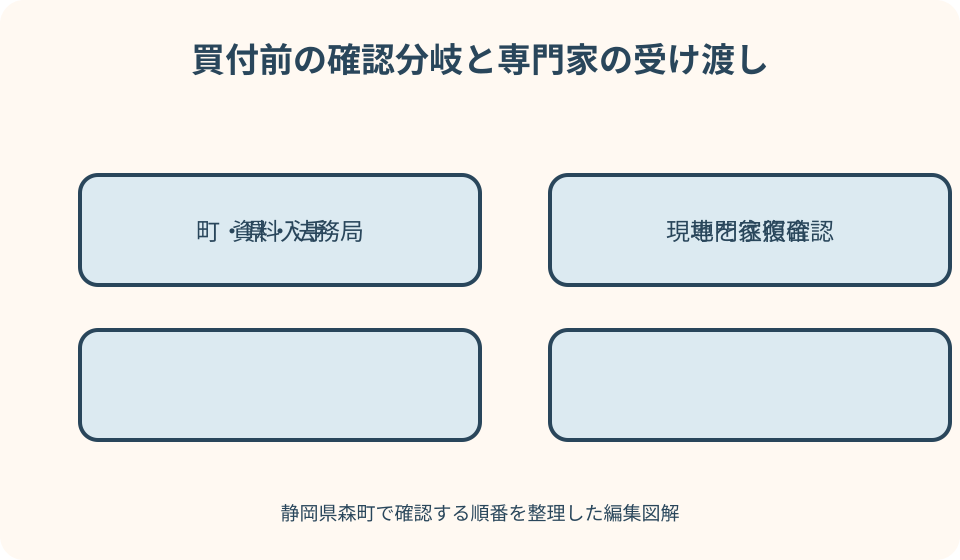

住まい・土地｜最終確認 2026-08-10
静岡県森町で土地を買う前の確認｜接道・農地・上下水道・災害リスクを順に調べる
森町の土地は、町なかの既成宅地、太田川沿いの低地、茶畑に近い集落、北部の山間部で確認項目の重みが変わります。広告に『宅地』『住宅向き』とあっても、建物を希望どおり建てられること、前面道路から車で安全に出入りできること、水道や排水を妥当な工事で整えられることまでは確定しません。買付や契約の前に、地番を基準として登記・境界・道路・農地・都市計画・設備・災害・生活圏を一筆ずつ調べ、回答者と確認日を記録する手順をまとめます。

広告の住所ではなく地番と対象筆から始める
土地の広告にある住居表示や付近住所は場所を探す手掛かりですが、権利の対象を特定する番号とは限りません。売買対象の地番と筆数を文書で受け取ります。
一つの敷地に見えても、宅地、畑、山林、通路など複数筆で構成される場合があります。含まれる筆と含まれない筆を一覧にし、進入路だけ別所有ではないか確かめます。
面積は広告、公簿、測量成果、現地利用範囲で異なることがあります。どの面積を売買代金や計画の前提にするのかを、測量の有無と一緒に確認します。
森、飯田、一宮、天方、三倉など地区名だけで条件を一般化しません。同じ地区内でも川、斜面、道路、農地の位置が違うため、照会は必ず地番単位で行います。
登記情報は所有者・権利・地目を分けて読む
法務局の登記事項証明書では、表題部の所在、地番、地目、地積と、権利部の所有権や担保などを分けて読みます。写しの取得日も記録します。
名義人の表示だけを見て安心せず、売主が処分できる状態か、抵当権等をどの時点でどう扱うかを司法書士と契約前に確認します。口頭説明だけで済ませません。
登記地目が宅地でも、現況、都市計画、道路、造成、排水の条件が自動的に整うわけではありません。反対に畑や田の表示には農地法上の追加確認が必要です。
静岡地方法務局の管轄案内で担当登記所を確かめ、最新の証明書、公図、地積測量図など取得できる資料をそろえます。古い売買資料を現在資料の代用にしません。
境界は杭の本数ではなく資料と立会いで確かめる
現地にコンクリート杭や金属標があっても、それが売買対象すべての境界点を示すとは断定できません。公図、地積測量図、境界確認書と現地標識を対応させます。
生垣、擁壁、側溝、茶畑の畝、舗装端は、見た目の区切りであって筆界と一致する保証がありません。越境物と管理範囲も別に記録します。
境界が不明確なまま建物配置、駐車場、擁壁、排水管を設計すると、後から有効面積や離隔が変わり得ます。土地家屋調査士へ資料調査と現地確認の範囲を相談します。
確定測量を行うか、隣接所有者との確認がどこまで済んでいるか、費用と期間を誰が負担するかを契約条項へ落とします。『おおむねこの辺』は判断材料にしません。

良い点
森町は町公式サイトに都市計画図、農地転用、公共下水道、ハザードマップの入口が分かれており、担当課へ地番を示して照会する道筋を組みやすい地域です。
町なか、天浜線沿線、農地に近い集落、山間部という性格の違いを先に意識すると、現地で見るべき道路幅、勾配、排水、移動時間を具体化できます。
建築士へ希望する家の規模、車の台数、在宅勤務、将来の家族構成まで伝えれば、単なる土地評価ではなく生活計画との適合を検討できます。
契約前に不確定事項を一覧化できれば、購入を急ぐか否かではなく、調査追加、条件付契約、候補変更という現実的な選択へ進めます。
道路は幅員だけでなく法上の扱いと権利を見る
現地で車が通れることと、建築計画上必要な道路条件を満たすことは同じではありません。静岡県の指定道路図は参考図とされているため、最終確認先も読みます。
前面の道が町道、県道、私道、農道など何として管理され、建築基準法上どう扱われるかを、道路管理者と建築確認を扱う窓口・機関へ照会します。
私道を通る場合は、持分、通行、掘削、上下水道管の埋設、維持補修の負担を権利資料で確認します。近所で通れているという事実だけに頼りません。
接道長さ、セットバック、隅切り、側溝、電柱、橋や暗渠が計画に影響する場合があります。建築士に測量資料と道路回答を同時に見せます。
車の出入りと工事車両の経路を現地で試す
森町では生活に車を使う計画が多くても、敷地前へ着けることと毎日安全に出庫できることは別です。朝夕、雨天、夜間の見通しを可能な範囲で確認します。
敷地内の駐車寸法だけでなく、道路から曲がる角度、対向車待避、歩行者、自転車、通学時間、ゴミ収集車の動きを観察し、生活道路を塞がない配置を考えます。
住宅完成後に乗用車が入れても、建築中の資材車、クレーン、コンクリート車が進入できないと工法や費用へ影響します。施工候補者に経路を見てもらいます。
橋を渡る、狭い屈曲を通る、急坂を上る敷地は、荷重、道路使用、近隣調整も確認します。現地写真だけで施工可能と決めません。

地目が田畑なら売買と宅地利用を別々に確認する
森町公式は、農地を宅地等へ転用して使う場合に申請と許可が必要になる旨を案内しています。売買契約を結べることと住宅用地にできることを混同しません。
現に耕作されていない土地でも農地として扱われる場合があります。草が生えている、砂利が敷かれている、広告が雑種地風に見えるという外観で判断しません。
第何種の農地か、農業振興地域内の扱い、転用見込み、申請者、必要図面、審査期間を森町農業委員会へ計画内容と地番を示して相談します。
県公式も、農地転用は立地基準や一般基準で審査され、具体的な利用計画を伴うと説明しています。許可される前提で造成契約や建物発注を進めません。
用途地域と建築条件は計画建物を示して照会する
森町公式の都市計画図で概略を見た後、対象地が都市計画区域の内外か、用途地域の指定があるか、境界付近ではどちら側かを担当課へ確認します。
建ぺい率、容積率、高さ、用途、敷地の最低条件などは一つの地図だけで完結しません。住宅、店舗併用、車庫、倉庫など希望用途を具体的に伝えます。
立地適正化計画等による届出対象がないか、開発・造成に別手続がないかも確認します。区域外や無指定という表現を『何でも建てられる』と読み替えません。
最終的な建築計画は建築士と指定確認検査機関等へ相談します。売主、仲介者、役所の一般回答のどれか一つだけで建築可否を保証されたと扱いません。
上下水道は道路本管から宅内設備まで線で追う
森町の公共下水道は供用開始区域が地区名の全域と同義ではなく、町公式も使える区域の詳細を窓口で確認するよう案内しています。地番で照会します。
上水道は給水区域、前面道路の配水管、引込管の有無と口径、メーター、加入や工事の条件を上下水道課と指定工事事業者へ確認します。
道路に本管があっても敷地へ適切な引込みがあるとは限りません。私道掘削、舗装復旧、高低差、他人管の利用など追加条件を図面で洗い出します。
下水道区域外なら浄化槽、放流先、側溝、水路、土地の浸透条件を確認します。排水できるという口頭説明ではなく、管理者の同意や必要手続きを確かめます。
造成・擁壁・地盤は見積り前に履歴を集める
平らに見える敷地でも、盛土、切土、埋戻し、旧水路、造成時期が分からないことがあります。過去図面、許可・検査資料、航空写真など確認可能な履歴を集めます。
既存擁壁は高さ、構造、排水孔、傾き、ひび、越境、確認資料を調べます。見た目が丈夫そうでも、新築荷重へそのまま使えるとは限りません。
地盤調査は建物配置と調査方式によって意味が変わります。契約前にできる調査、購入後に行う調査、結果が悪い場合の費用負担を施工候補者と整理します。
残土搬出、伐採、抜根、石積み撤去、土留め、雨水処理まで造成費へ含めます。土地価格だけを比較せず、住める状態までの総額を幅で見積もります。
注文したい点
仲介資料には、地番別の権利、境界確定状況、道路種別と接道回答、農地手続、給排水図、造成履歴を同じ一覧にして示してもらいたいところです。
『上下水道あり』『接道あり』『建築可能』という短い表示には、確認先、確認日、回答条件、買主側で残る調査を追記してもらいます。言葉だけを契約根拠にしません。
売主へは告知事項だけでなく、過去の浸水、崩落、擁壁補修、井戸、水路、越境、近隣との通行・排水の取り決めについて資料の有無を尋ねます。
期限の短い買付を求められても、重要な行政照会や専門家確認が終わらないなら、回答期限の延長か停止を選びます。急ぐ事情は不確定条件を消しません。
ハザードは一枚の色だけで安全を決めない
森町防災ハザードマップは河川氾濫区域、土砂災害に関する箇所、防災施設などを地区別に確認する入口です。住所検索と地番図を照合します。
洪水、土砂、地震、ため池は発生の仕組みと地図が異なります。色がないことを無危険とせず、敷地だけでなく避難経路、橋、通勤通学路まで見ます。
太田川や支流に近い低地では浸水想定、山際や谷筋では斜面と土砂、ため池周辺では専用地図を追加確認します。現地の高低差も測量資料で確かめます。
保険、床高、設備配置、擁壁、避難先を家族と建築士へ共有します。災害時に必ず住める、必ず被害を免れるという結論は出しません。
通学と生活圏は平日朝夕に往復して測る
地図上の直線距離ではなく、自宅候補から学校、駅、バス停、病院、買物、勤務先まで実際に使う経路を平日と休日で確認します。
学校区や通学方法は購入時点の思い込みで決めず、森町教育委員会へ地番を示して確認します。転校、スクールバス、町営バス等も当年度情報へ戻ります。
山間部では携帯通信、停電時の設備、燃料・食料の補給、宅配、ゴミ出し、救急車両の接近も生活条件です。晴天昼間だけの内見で終えません。
家族全員が車を運転できる前提を置かず、運転できない日、子どもの帰宅、高齢期、悪天候の移動を試算します。魅力的な眺望と日常負担を同じ表で比べます。
晴天の一回だけでなく雨・夜・季節を変えて見る
土地の第一印象は晴れた昼間に良くなりやすいため、可能なら降雨中か雨上がりにも訪れます。敷地へ流れ込む水、道路側溝、ぬかるみ、水路の水位、斜面からの湧水を離れた安全な場所から記録します。
日没後は街灯、交差点の見通し、歩行者の位置、玄関や駐車場を置く側の暗さを確認します。私有地へ入らず、近隣へ配慮し、短時間の観察で不審な行動にならないよう仲介者と調整します。
夏と冬では日照、風、草木、虫、川の音、農作業の時間が変わります。すべての季節を待てない場合は、売主への質問、近隣環境資料、気象記録、設計上の対策を組み合わせ、未確認として残します。
現地メモには日時と天候を入れ、写真の撮影方向を公図へ書き込みます。『静かだった』『水はなかった』という一日の感想を、年間を通じた土地の性質へ広げないためです。
調査結果を重要事項説明と契約条件へつなげる
役所や専門家から得た回答は、電話メモのまま保管せず、地番、質問、回答日、担当窓口、参照資料、未回答点を一枚の確認表へまとめます。買主と仲介者が同じ版を見られる状態にします。
重要事項説明では、道路、私道負担、法令上の制限、給排水、造成、防災、契約不適合に関する記載と収集資料を照合します。説明を受けた事実と、希望する家を建てられる判断を同一視しません。
農地転用、境界確定、抵当権抹消、融資、建築士の事前検討などが前提なら、期日、不成立時の扱い、費用、解除や返金の条件を文書にする方法を資格者へ相談します。口約束で先送りしません。
契約直前にも登記情報、行政の更新、災害や工事による現地変化を再確認します。調査開始時に正しかった資料が、決済時点も同じとは限らないため、最終確認日を工程表へ入れます。
専門家への確認を契約前の工程に組み込む
土地家屋調査士には境界と測量、司法書士には登記権利、建築士には道路・法規・配置、施工者には造成・地盤・工事経路を中心に相談します。
農地や許認可は森町農業委員会、町の担当課、静岡県の窓口へ確認し、必要に応じ行政書士等へ申請実務を相談します。誰の回答かを混ぜません。
相談時は地番、公図、登記、測量図、現地写真、道路回答、上下水道図、希望建物、予算を一組にします。同じ資料で話すと回答条件のずれを減らせます。
調査費を惜しんで契約後に大きな造成費や利用制限が判明するより、候補段階で調査範囲と上限を決めます。専門家の責任範囲も確認します。
代案・結論
確認が間に合わない土地は即断せず、調査期間を確保した買付、停止条件、専門家確認後の契約などが可能か仲介者と相談します。条項は資格者にも確認します。
農地転用、接道、排水、擁壁の見通しが立たない場合は、同じ地区の既成宅地、インフラ引込み済み分譲地、中古住宅付き土地へ候補を移します。
総額比較には、土地代、登記、測量、境界、造成、擁壁、地盤改良、上下水道、浄化槽、私道、外構、税・手数料を含め、未確定費には余裕を持たせます。
買う結論より先に『どの条件なら買わないか』を家族で決めます。法的結論や工事可否をこの記事から推定せず、対象地の最新回答で更新します。
大石の視点
森町で土地を見るとき、私は眺めの良さより先に、雨の日の水の流れと毎朝車を出す角度を見ます。暮らしは好天の内見日だけでは続かないからです。
行政の地図は大切ですが、地図を開いたこと自体を調査完了にしません。地番、建物計画、回答日を添えて担当者へ聞き、専門家が図面へ落とせる情報にします。
安く見える土地ほど問題があると言いたいのではありません。価格に含まれていない工事と時間を見える化できれば、土地の個性を落ち着いて比較できます。
森町らしい自然や地域との距離を楽しむには、道路、水、境界、防災、通学を先に整えることが近道です。契約を急がず、長く説明できる選択を残します。
公式情報・確認先
掲載内容は次の一次情報を基礎に整理しました。営業、料金、催し、交通は変わるため、出発前または手続き前にリンク先で最新情報を確認してください。
- 森町の都市計画について（静岡県森町、2026-08-10確認）
- 農地を農地以外のもの（宅地等）にする場合（静岡県森町、2026-08-10確認）
- 森町公共下水道事業計画（静岡県森町、2026-08-10確認）
- 上水道（静岡県森町、2026-08-10確認）
- 森町防災ハザードマップ（静岡県森町、2026-08-10確認）
- 農地転用許可制度とは（静岡県、2026-08-10確認）
- 指定道路図の公開について（静岡県、2026-08-10確認）
- 静岡地方法務局 管轄のご案内（不動産登記）（静岡地方法務局、2026-08-10確認）